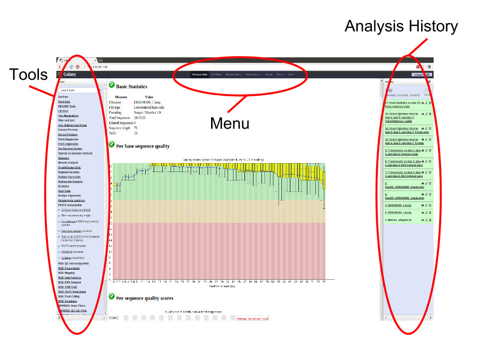
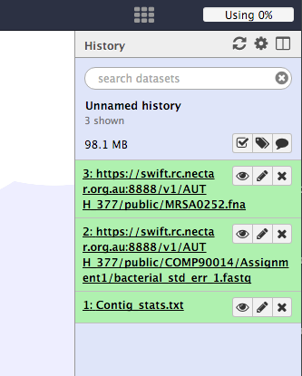

Introduction to Galaxy¶
Written and maintained by Simon Gladman - Melbourne Bioinformatics (formerly VLSCI)
Overview¶
This beginners tutorial will introduce Galaxy’s interface, tool use, histories, and get new users of the Genomics Virtual Laboratory up and running. You can follow this tutorial with the Galaxy Workflows tutorial to learn about workflows.
Galaxy is an open source, web-based platform for accessible, reproducible, and transparent computational biomedical research. It allows users without programming experience to easily specify parameters and run individual tools as well as larger workflows. It also captures run information so that any user can repeat and understand a complete computational analysis. Finally, it allows users to share and publish analyses via the web.
Learning Objectives¶
At the end of the course, you will be able to:
- login to a Galaxy server.
- upload data to a Galaxy server from:
- A file on your local computer
- A file on a remote datastore with an accessible URL.
- use tools in Galaxy by:
- Accessing the tool via the tool menu
- Using the tool interface to run the particular tool
- Viewing/accessing the tool output.
Requirements¶
This is a hands-on workshop and attendees should bring their own laptops.
Background¶
Galaxy is a web based analysis and workflow platform designed for biologists to analyse their own data. It comes with most of the popular bioinformatics tools already installed and ready for use. There are many Galaxy servers around the world and some are tailored with specific toolsets and reference data for analysis of human genomics, microbial genomics, proteomics etc.
There are some introductory slides available here.
Basically, the Galaxy interface is separated into 3 parts. The tool list on the left, the viewing pane in the middle and the analysis and data history on the right. We will be looking at all 3 parts in this tutorial.

This workshop/tutorial will familiarize you with the Galaxy interface. It will cover the following topics:
- Logging in to the server
- Getting data into galaxy
- How to access the tools
- Using to use some common tools
Section 1: Preparation.¶
The purpose of this section is to get you to log in to the server.
-
Open your browser. We recommend Firefox or Chrome (please don’t use Internet Explorer or Safari).
- Go to the Galaxy Australia server.
- Alternatively, you can use a different Galaxy server - a list of available servers is here.
-
If you have previously registered on this server just log in:
- On the top menu select: User -> Login
- Enter your password
- Click Submit
-
If you haven’t registered on this server, you’ll need to now.
- On the top menu select: User -> Register
- Enter your email, choose a password, repeat it and add a (all lower case) one word name
- Click Submit
Section 2: Getting data into Galaxy¶
There are 2 main ways to get your data into Galaxy. We will use each of these methods for 3 files and then use those 3 files for the rest of the workshop.
-
Start a new history for this workshop. To do this:
- Click on the history menu button (the
 icon) at the top of the Histories panel.
icon) at the top of the Histories panel. - Select Create New
- Click on the history menu button (the
It is important to note that Galaxy has the concept of “File Type” built in. This means that each file stored needs to have its type described to Galaxy as it is being made available. Examples of file types are: text, fasta, fastq, vcf, GFF, Genbank, tabular etc.
We will tell Galaxy what type of file each one is as we upload it.
Method 1: Upload a file from your own computer¶
With this method you can get most of the files on your own computer into Galaxy. (there is a size limit)
-
Download the following file to your computer: https://swift.rc.nectar.org.au:8888/v1/AUTH_377/public/galaxy101/Contig_stats.txt.gz
- (To download this file, copy the link into a new browser tab, and press enter. The file should now download.)
- From the Galaxy tool panel, click on Get Data -> Upload File
- Click the Choose File button
- Find and select the Contig_stats.txt.gz file you downloaded and click Open
- Set the “Type” (= file format) to tabular
- Click the Start button
- Once the progress bar reaches 100%, click the Close button
The file will now upload to your current history.
Method 2: Upload a file from a URL¶
If a file exists on a web resource somewhere and you know its URL (Unique resource location - a web address) you can directly load it into Galaxy.
-
From the tool panel, click on Get Data -> Upload File
- Click on the Paste/Fetch Data button
- Copy and paste the following web address into the URL/Text box: https://swift.rc.nectar.org.au:8888/v1/AUTH_377/public/COMP90014/Assignment1/bacterial_std_err_1.fastq.gz
- Set the file format to fastqsanger (not fastqcsanger)
- Click Start
- Once the progress bar has reached 100%, click Close
Note that Galaxy is smart enough to recognize that this is a compressed file and so it will uncompress it as it loads it.
Method 2 (again): Get data from a Data Library¶
Now we are going to get another file from a shared Data Library.
-
Go to the menu at the top of the screen and click Shared Data -> Data Libraries.
-
Click on the Library: “Galaxy Australia Training Material” then “Galaxy_101”
-
To add the MRSA0252.fa file to our history
- click on the checkbox next to it
- Then click the “To History” button at the top of the page and select “As Datasets”
- Click the “Import” button
- Finally, click “Analyse Data” in the menu at the top of the screen to return to your history.
The DNA sequence of Staphlococcus aureus MRSA252 will be loaded into your history as a fasta file.
Your history should now look like this.

The data¶
Though we aren’t going to focus on the contents of these files and what they mean from a bioinformatics standpoint, here is a brief description of each one.
-
Contigs_stats.txt
- this file contains a table of summary data from a de novo genome assembly (the process of attempting to recover the full genome of an organism from the short read sequences produced by most DNA sequencing machines. )
- The columns contain a lot of information but the ones we will be using indicate the amount of data (or coverage) that went into making up each piece of the final assembly.
-
bacterial_std_err_1.fastq.gz
- This file contains sequence reads as they would come off an Illumina sequencing machine. They are in fastq format.
-
MRSA0252.fna
- This file contains the genome sequence of Staphylococcus aureus MRSA252. It is in fasta format.
Section 3: Play with the tools¶
The purpose of this section is to get you used to using the available tools in Galaxy and point out some of the more basic manipulation tools.
Firstly however, you’ll notice that two of the files have very long and confusing names. So we might want to change them. To do this we need to “edit” the file. So:
- Click on the
 icon (edit) next to the file in the history called: https://swift.rc.nectar.org.au:8888/v1/AUTH_377/public/COMP90014/Assignment1/bacterial_std_err_1.fastq
icon (edit) next to the file in the history called: https://swift.rc.nectar.org.au:8888/v1/AUTH_377/public/COMP90014/Assignment1/bacterial_std_err_1.fastq - In the “Name” text box, give it a new name. Call it: Typical Fastq File
- Click the Save button.
Repeat the process for the MRSA252 fasta file. Rename it to MRSA252.fna
Now that’s better. There was a lot of other functionality hidden behind that edit ( ) icon. You can change a file’s data type, convert its format and many other things. Feel free to play around with them at a later date.
) icon. You can change a file’s data type, convert its format and many other things. Feel free to play around with them at a later date.
Ok, back to the tools.
Example 1: Histogram and summary statistics¶
The first thing we are going to do is produce a histogram of contig read coverage depths and calculate the summary statistics from the Contig_stats.txt file. To do this we need to cut out a couple of columns, remove a line and then produce a histogram. This will introduce some of the text manipulation tools.
Click on the  icon of the Contig_stats.txt file to have a look at it. Note that there are 18 columns in this file. We want column 1 and column 6. To do this:
icon of the Contig_stats.txt file to have a look at it. Note that there are 18 columns in this file. We want column 1 and column 6. To do this:
1. Cut out column 1 and column 6.
- From the tool panel, click on Text Manipulation -> Cut and set the following:
- Set “Cut Columns” to: c1,c6
- “Delimited by”: Tab
- “Cut from”: Contig_stats.txt
- Click Execute
Examine the new file by clicking on its  icon. We now have 2 columns instead of the 18 in the original file.
icon. We now have 2 columns instead of the 18 in the original file.
2. Remove the Header lines of the new file.
- From the tool panel, click on Text Manipulation -> Remove beginning and set the following:
- “Remove First”: 1
- “from”: Cut on data1
- click Execute
Note the the new file is the same as the previous one without the header line.
3. Make a histogram.
- From the tool panel, click on Graph/Display Data -> Histogram and set the following:
- “Dataset”: Remove beginning on Data X
- “Numerical column for X axis”: c2
- “Number of breaks”: 25
- “Plot title”: Histogram of Contig Coverage
- “Label for X axis”: Coverage depth
- Click Execute
Click on the  icon of the histogram to have a look at it. Note there are a few peaks. Maybe these correspond to single, double and triple copy number of these contigs.
icon of the histogram to have a look at it. Note there are a few peaks. Maybe these correspond to single, double and triple copy number of these contigs.
4. Calculate summary statistics for contig coverage depth.
- From the tool panel, click on Statistics -> Summary Statisitics and set the following:
- “Summary statistics on”: Remove beginning on Data X
- “Column or expression”: c2
- Click Execute
Example 2: Convert Fastq to Fasta¶
This shows how to convert a fastq file to a fasta file. The tool creates a new file with the converted data.
Converter tool
- From the tool panel, click on Convert Formats -> FASTQ to FASTA and set the following:
- “FASTQ file to convert”: Typical Fastq File
- Click Execute
This will have created a new Fasta file called FASTQ to FASTA on data 2.
Example 3: Find Ribosomal RNA Features in a DNA Sequence¶
This example shows how to use a tool called “barrnap” to search for rRNAs in a DNA sequence.
1. Find all of the ribosomal RNA’s in a sequence
- From the tool panel, click on NGS: Annotation -> barrnap and set the following:
- “Fasta file”: MRSA252.fna
- Click Execute
A new file called barrnap on data 3 will be produced. It is a gff3 file. (This stands for genome feature format - version 3. It is a file format for describing features contained by a DNA sequence.) Change its name to something more appropriate (click on the  icon.)
icon.)
Now let’s say you only want the lines of the file for the 23S rRNA annotations. We can do this using a Filter tool.
2. Filter the annotations to get the 23S RNAs
- From the tool panel, click on Filter and Sort -> Select and set the following:
- “Select lines from”: (whatever you called the barrnap gff3 output)
- “that”: Matching
- “the pattern”: 23S (this will look for all the lines in the file that contain “23S”)
- Click Execute
Now you have a gff3 file with just the 23S annotations!
What now?¶
Remember how we started a new history at the beginning? If you want to see any of your old histories, click on the history menu button  at the top of the histories panel and then select “Saved Histories.” This will give you a list of all the histories you have worked on in this Galaxy server.
at the top of the histories panel and then select “Saved Histories.” This will give you a list of all the histories you have worked on in this Galaxy server.
That’s it. You now know a bit about the Galaxy interface and how to load data, run tools and view their outputs. For more tutorials, see http://genome.edu.au/learn